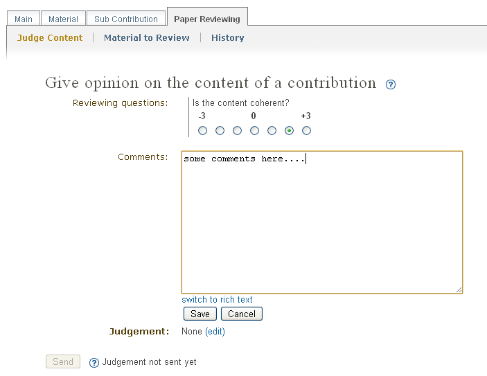
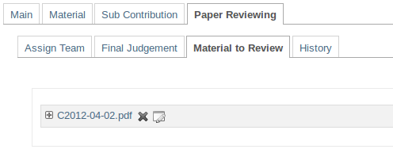

1. Paper Reviewing Module - Content Reviewers’s Guide¶
1.1. Getting Started¶
As a content reviewer your responsibility is to give your opinion about the contribution’s content. Firstlly, you must log in the system, then you will find a link Content Reviewer Area in the left menu under My Conference.

1.2. Content Reviewer Area¶
When you access the Content Reviewers Area you will find a list of all the contributions that are assigned to you in order to judge them. You see the state for every contribution - if you have already judged a contribution or if the assigned referee has given the final judgement.
From list you can click on a contribution’s title and access the page which will allow you to judge that contribution. Once in that page, you should fill in the questions provided by the Paper Review Manager. The comments that you will write down should help the Referee to give his judgement. As a final step, give your judgement for the content of the contribution: to be corrected, rejected, accepted. The authors of the contribution will receive an automatic e-mail notification containing your comments and judgment, if the Managers of the Paper Reviewing set this option.
The material which is subject of reviewing is accessible under Material to Review.
